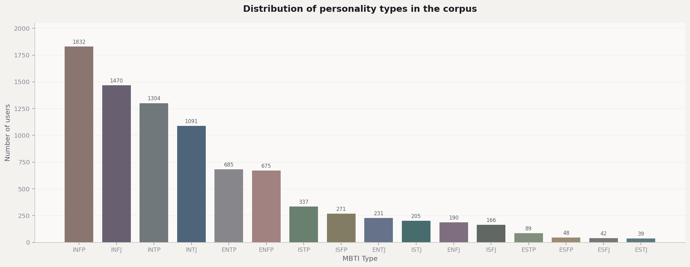
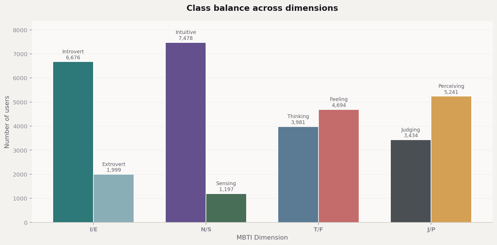
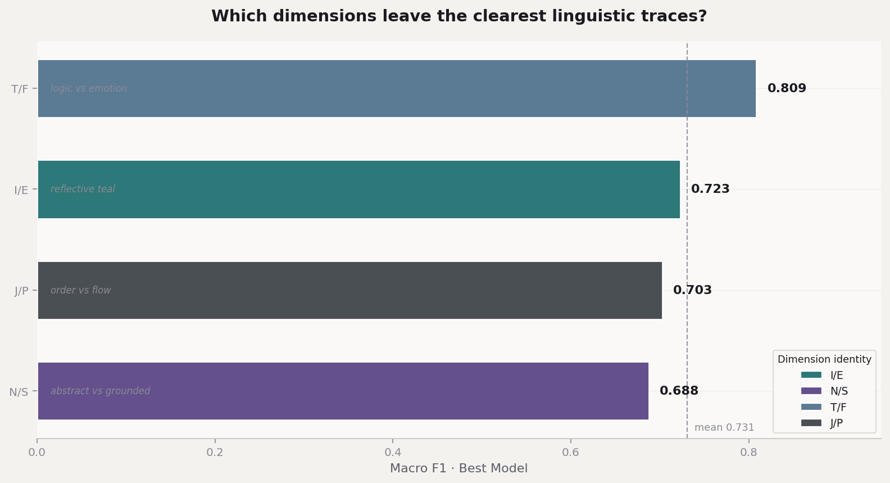
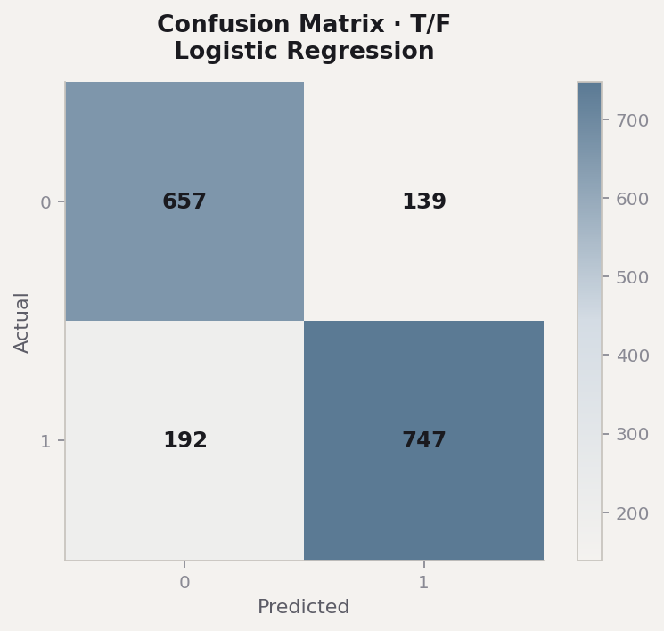
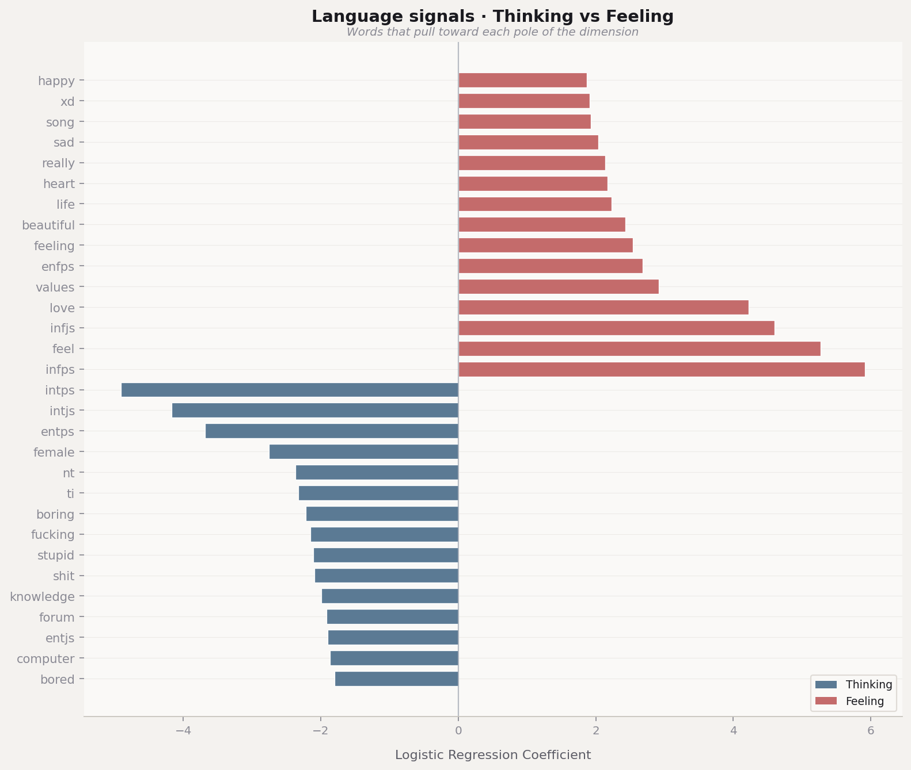
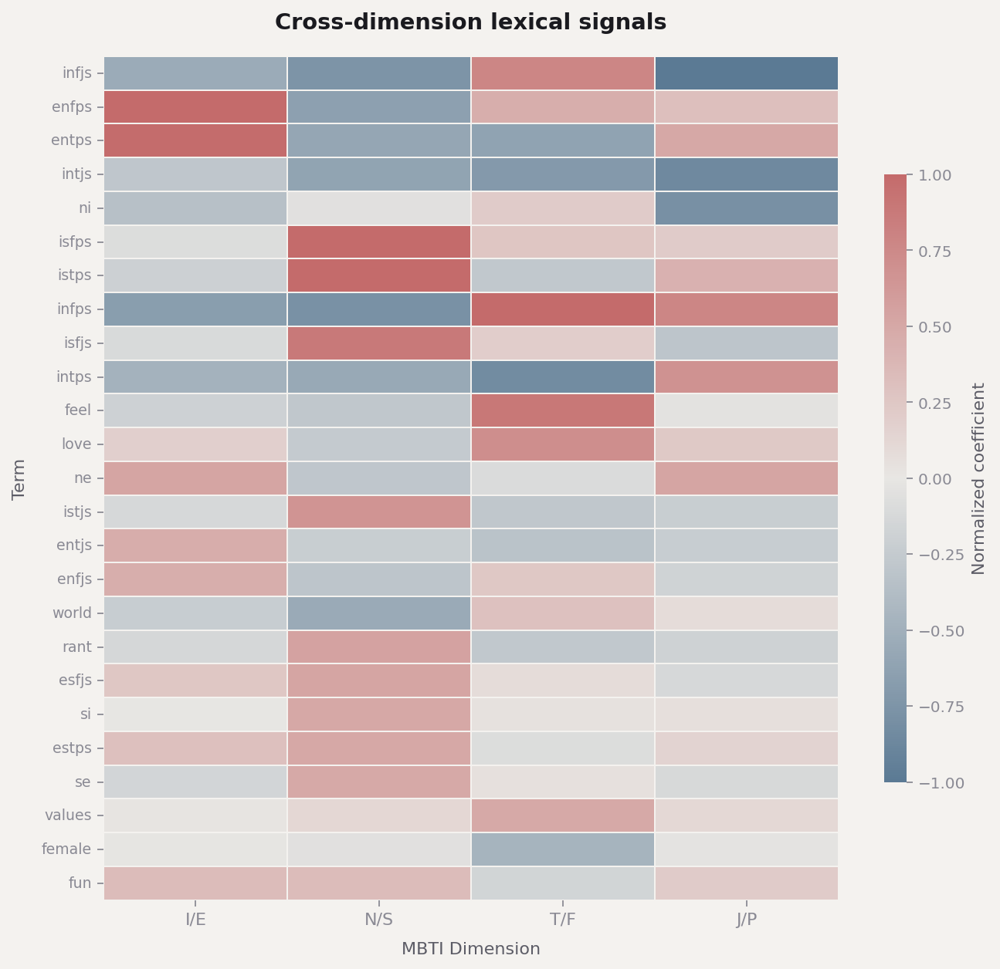

Which dimensions are most predictable from text?
Ranked by macro F1 across I/E, N/S, T/F, J/P.
Every sentence leaves a trace.
Can machine learning read those traces?
Language reflects patterns of attention, emotion, and social orientation.
We use MBTI as a structured label space — not ground-truth psychology — to ask whether text carries detectable personality signals.
Ranked by macro F1 across I/E, N/S, T/F, J/P.
Interpreted through logistic regression coefficients.
Explored in Chapters 09–11.
Complex
Clearer
Kaggle MBTI dataset · self-reported forum posts
Noisy, informal, imperfect — but large enough to learn from.


Moderate preprocessing preserves the signals we seek.
Normalize form
Strip noise
Prevent leakage
Emotion & style stay
5,000 TF-IDF features · stratified split · interpretable by design
We chose classical features over transformers — to read which words matter.
Readable coefficients · best overall
Strong sparse-text baseline
Non-linear comparison
class_weight="balanced" on all models
Accuracy alone misleads under imbalance.
Macro F1 · ROC-AUC · confusion matrices
The synthesis of what language revealed — and what remains open.
Strongest signal
Macro F1 · Thinking vs Feeling
Thinking / Feeling emerged as the clearest linguistic axis.
Emotional vocabulary and analytical tone diverge sharply in forum language.
Weaker but non-random — harder to separate from topic and style noise.
Expressive differences · interpersonal framing · feeling vs. logic in word choice.
RQ1 answer: personality signal exists — strongest along the thinking–feeling dimension.


Psychological traces embedded in vocabulary — not a keyword list.
Thinking → logic, systems, analysis
Feeling → emotion, care, connection
Abstract reasoning, structure, and problem-solving vocabulary.
Interpersonal warmth, empathy, and affective expression.
How writers position themselves toward people and communities.
Decisive tone contrasts with exploratory, tentative phrasing.
RQ2 answer: models surface interpretable word–dimension associations — especially along T/F.


Are we detecting personality — or the subjects people talk about?
Personality modeling must ask whether language carries psychological signal — or merely reflects what we choose to discuss.
Models may exploit topic — not true personality traces.
What we discuss
How we write
RQ3 asks: if we strip the first, does the second still predict?
An exploratory direction — not a finished result.
Reduce reliance on high-IDF content words.
Punctuation, length, richness, function words.
Re-run models · compare macro F1 to baseline.
Placeholder in 05_build_style_features.py — methodologically important, not yet complete.
We express identity through interests and communities.
Recurring subjects carry emotional focus.
Separating personality from topic may be impossible in practice.
RQ3 remains open — but the question itself matters.
Signal may live in how we write, not only what we discuss.
MBTI is debated — we study self-reported labels.
Forum language is noisy and performative.
Topic and personality can overlap.
Language reveals tendencies — not identity.
Recreate the pipeline — from raw posts to interpretability figures.
pip install -r requirements.txtpython scripts/run_pipeline.py · run all stages
Language may not perfectly reveal identity —
but it leaves measurable traces of how we think, feel, and relate to the world.